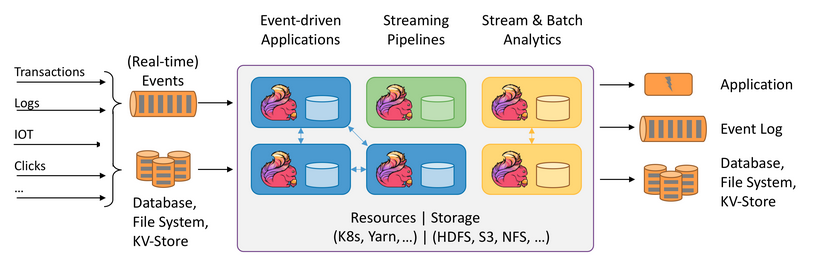
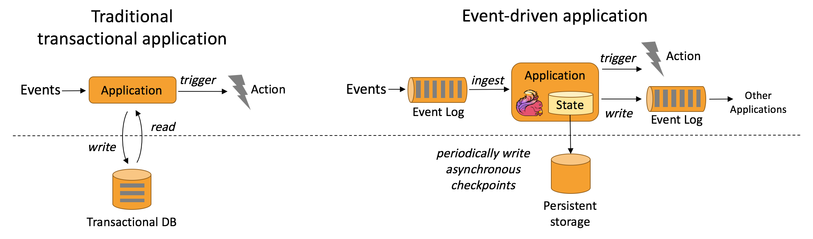
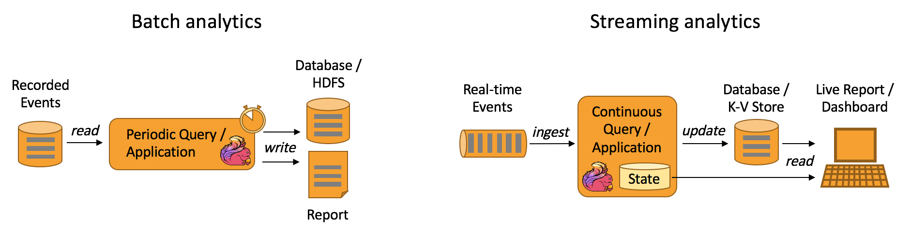
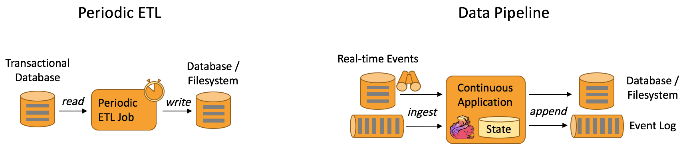
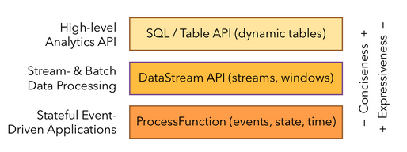

Przetwarzanie równoległe i strumieniowe
Wykład 10
Przetwarzanie danych strumieniowych w Apache Flink: API, model danych, okna czasowe


Plan wykładu
zastosowania, strumienie ograniczone i nieograniczone, architektura klastra, co zmienił Flink 2.x
środowisko, źródła, transformacje, keyBy, równoległość, ujścia, tryb STREAMING i BATCH
TableEnvironment, zapytania, tabele dynamiczne i changelog, konwersje Table ↔ DataStream
czas zdarzenia i przetwarzania, znaczniki wodne (watermarks), okna tumbling, sliding, session
keyed state, ValueState, checkpointy i savepointy, exactly-once
quizy, ćwiczenia, odniesienie do laboratoriów i do Kafki (wykład 12)
Gdzie jesteśmy? Na wykładzie 2 budowaliśmy potoki generatorów (źródło → map/filter → ujście), na wykładzie 9 okna w Streamz (sliding_window, timed_window). Flink robi to samo, ale równolegle, na wielu maszynach, z trwałym stanem i czasem zdarzeń.
Apache Flink
Apache Flink to framework i rozproszony silnik do stanowych obliczeń na nieograniczonych i ograniczonych strumieniach danych.
- małe opóźnienia (milisekundy) przy dużej przepustowości,
- spójny stan z gwarancją exactly-once mimo awarii (checkpointy),
- obsługa czasu zdarzenia (event time) i danych spóźnionych,
- skalowanie od laptopa do tysięcy rdzeni (Kubernetes, YARN, standalone),
- API: Java (DataStream, Table API), Python (PyFlink), SQL.
| Wersja | Wydana | Uwagi |
|---|---|---|
| 2.3 | czerwiec 2026 | aktualna stabilna |
| 2.0 | marzec 2025 | pierwsze wydanie 2.x: usunięte stare API |
| 1.20 | 2024 (łatki do 2026) | ostatnia linia 1.x (LTS) |
Wiele tutoriali w sieci (i stare materiały z laboratoriów) pisano dla Flink 1.x. Następny slajd pokazuje, czego już nie ma.

Źródło grafiki: https://flink.apache.org
Flink 2.x: co się zmieniło
| Flink 1.x (spotkacie w starych przykładach) | Flink 2.x |
|---|---|
DataSet API (ExecutionEnvironment) do przetwarzania wsadowego | usunięte: DataStream w trybie BATCH albo Table API / SQL |
| Scala API | usunięte: API Javy (można je wołać ze Scali) |
env.addSource(new FlinkKafkaConsumer(...)), SourceFunction | env.fromSource(KafkaSource, WatermarkStrategy, nazwa): nowe Source API |
addSink(SinkFunction), writeAsText, writeAsCsv | sinkTo(...) z Sink V2: FileSink, KafkaSink, … |
.timeWindow(Time.seconds(10)) | .window(TumblingEventTimeWindows.of(Duration.ofSeconds(10))) |
TableSource / TableSink, toAppendStream | konektory w CREATE TABLE ... WITH (...), toDataStream, toChangelogStream |
Java 8, plik flink-conf.yaml, tryb per-job | Java 11+ (zalecana 17, wspierana 21), config.yaml, tryb application |
PyFlink 2.3 (pip install apache-flink==2.3.0) działa na Pythonie 3.9-3.12, nie na 3.13, i wymaga Javy 11, 17 lub 21. Na laboratoriach używamy osobnego środowiska wirtualnego z Pythonem 3.12.
Aplikacje sterowane zdarzeniami

- Event-driven application reaguje na zdarzenia (wykrywanie oszustw, alerty, reguły biznesowe), a dane potrzebne do decyzji trzyma w lokalnym stanie zamiast pytać zdalną bazę przy każdym zdarzeniu.
- Stan jest okresowo zapisywany (checkpointy) w trwałym magazynie, więc po awarii aplikacja wraca do spójnego punktu.
Źródło grafiki: https://flink.apache.org/what-is-flink/use-cases/
Analityka i potoki danych

- Analityka: zamiast raportu liczonego co noc (wsadowo) zapytanie ciągłe aktualizuje wynik, np. dashboard, z każdym zdarzeniem.

- Potoki danych (ETL): zamiast okresowego zadania kopiującego dane ciągły potok czyści, wzbogaca i przenosi zdarzenia na bieżąco, np. z Kafki do bazy lub hurtowni.
Źródło grafik: https://flink.apache.org/what-is-flink/use-cases/
Przetwarzanie wsadowe i strumieniowe
- Przetwarzanie wsadowe działa na strumieniu ograniczonym: można najpierw wczytać wszystko, a potem sortować, liczyć statystyki globalne i wypisać raport końcowy.
- Przetwarzanie strumieniowe działa na strumieniu nieograniczonym: dane mogą nigdy się nie skończyć, więc wyniki trzeba liczyć ciągle, w miarę napływu.
Dla Flinka plik to po prostu strumień, który się kończy. Ten sam program działa na obu rodzajach danych (wsad to szczególny przypadek strumienia).
Wczorajszy plik z logami serwera WWW to strumień…
Ograniczony: ma znany koniec. Logi spływające na bieżąco z serwera (np. przez Kafkę) to już strumień nieograniczony.
Architektura klastra Flink
- JobManager koordynuje: przyjmuje zadanie, planuje podzadania, wyzwala checkpointy i odtwarza zadanie po awarii.
- TaskManager (worker) wykonuje podzadania. Ma stałą liczbę slotów, a każde podzadanie działa w osobnym wątku (wykład 1 i pule wątków z wykładu 7).
- Skrypt PyFlink uruchomiony na laptopie startuje lokalny MiniCluster: JobManager i TaskManager w jednym procesie JVM.
- Wdrożenia: standalone, Kubernetes (operator Flink), YARN. Od Flink 2.0 tryb session albo application (per-job usunięto).
Anatomia programu Flink
Każdy program Flink ma te same części:
- uzyskaj środowisko wykonawcze,
- utwórz źródło danych (source),
- określ transformacje,
- określ, gdzie trafią wyniki (ujście, sink),
- uruchom program:
env.execute().
Wywołania map, key_by, print niczego jeszcze nie liczą: budują graf przepływu danych. Obliczenia startują dopiero w execute(), podobnie jak generator z wykładu 2 rusza dopiero przy next().
from pyflink.common import Types
from pyflink.datastream import StreamExecutionEnvironment
env = StreamExecutionEnvironment.get_execution_environment() # 1
env.set_parallelism(1)
tekst = env.from_collection(["to be or not", "to be"], # 2
type_info=Types.STRING())
para = Types.TUPLE([Types.STRING(), Types.INT()])
(tekst.flat_map(lambda s: [(w, 1) for w in s.split()], # 3
output_type=para)
.key_by(lambda p: p[0])
.reduce(lambda a, b: (a[0], a[1] + b[1]))
.print()) # 4
env.execute("word count") # 5
(to,1) (be,1) (or,1) (not,1) (to,2) (be,2)
Program jako graf przepływu danych
- Źródło (source operator) wczytuje dane: Kafka, pliki, bazy, generatory.
- Transformacje (transformation operators) tworzą z jednych strumieni kolejne:
map,keyBy,window,aggregate. - Ujście (sink operator) wysyła wyniki na zewnątrz.
Krawędzie grafu to strumienie. Flink może uruchomić każdy wierzchołek w wielu kopiach (podzadaniach) na wielu maszynach: o tym za chwilę.
W tutorialach dla Flink 1.x ten przykład używa env.addSource(new FlinkKafkaConsumer<>(…)), .timeWindow(Time.seconds(10)), .apply(…) i addSink(…). W 2.x tych metod już nie ma. Aktualny kod jest na następnym slajdzie.
Ten sam program w Javie (Flink 2.x)
StreamExecutionEnvironment env = StreamExecutionEnvironment.getExecutionEnvironment();
KafkaSource<String> kafka = KafkaSource.<String>builder()
.setBootstrapServers("localhost:9092")
.setTopics("odczyty")
.setValueOnlyDeserializer(new SimpleStringSchema())
.build();
DataStream<Odczyt> odczyty = env
.fromSource(kafka, WatermarkStrategy.noWatermarks(), "kafka") // źródło
.map(Odczyt::parse) // transformacja
.assignTimestampsAndWatermarks(WatermarkStrategy
.<Odczyt>forBoundedOutOfOrderness(Duration.ofSeconds(2))
.withTimestampAssigner((o, ts) -> o.czas));
DataStream<Double> srednie = odczyty
.keyBy(o -> o.czujnik) // transformacja
.window(TumblingEventTimeWindows.of(Duration.ofSeconds(10)))
.aggregate(new Srednia());
srednie.print(); // ujście
env.execute("czujniki");
Odczyt: POJO z polami czujnik, temp, czas; Srednia: slajd „Funkcje okien”. Skompilowane z Flink 2.3.0 i flink-connector-kafka 5.0.
DataStream: model danych
- DataStream to niezmienna (immutable) kolekcja elementów, która może zawierać duplikaty. Nie zmieniamy jej, tylko tworzymy nowe strumienie transformacjami.
- Dane mogą być ograniczone albo nieograniczone, a API jest takie samo.
- Strumień jest typowany. Flink musi znać typ elementów, żeby serializować je przy przesyłaniu między wątkami i maszynami oraz zapisywać w stanie.
from pyflink.common import Types
Types.INT(), Types.STRING(), Types.FLOAT()
Types.TUPLE([Types.STRING(), Types.INT()]) # krotka
Types.ROW_NAMED(["imie", "kwota"], # wiersz z nazwami
[Types.STRING(), Types.INT()])
Types.LIST(Types.INT())
ds.map(lambda x: 2 * x, output_type=Types.INT())
Bez output_type PyFlink przesyła spiklowane obiekty Pythona (PICKLED_BYTE_ARRAY): działa, ale wolniej i nie da się ich użyć w operatorach Javy ani w Table API.
Funkcje Pythona (lambdy, UDF) wykonuje osobny proces Pythona obok JVM (python.execution-mode: process), więc każdy element przekracza granicę JVM ↔ Python.
Środowisko wykonawcze
StreamExecutionEnvironment to kontekst programu: tworzy źródła i pozwala sterować wykonaniem (równoległość, checkpointy, tryb).
from pyflink.datastream import (StreamExecutionEnvironment,
RuntimeExecutionMode, CheckpointingMode)
env = StreamExecutionEnvironment.get_execution_environment()
env.set_parallelism(4) # domyślna równoległość operatorów
env.enable_checkpointing(10_000, # checkpoint co 10 s
CheckpointingMode.EXACTLY_ONCE)
env.set_runtime_mode(RuntimeExecutionMode.STREAMING) # domyślny
env.from_collection([1, 2, 3]).print()
env.execute("moje zadanie")
get_execution_environment() sam rozpoznaje kontekst: uruchomiony lokalnie startuje MiniCluster, a wysłany na klaster (flink run) łączy się z JobManagerem.
Opcje można też podać w config.yaml albo przy uruchomieniu: flink run -Dexecution.runtime-mode=BATCH …. Dokumentacja zaleca ustawiać tryb właśnie tam, a nie w kodzie.
Tryb STREAMING i BATCH
| STREAMING (domyślny) | BATCH | |
|---|---|---|
| wejście | ograniczone lub nieograniczone | tylko ograniczone |
| wykonanie | wszystkie zadania działają cały czas, rekordy płyną przez cały potok | etapy po kolei: następny startuje, gdy poprzedni skończy |
| wyniki | bieżące, aktualizowane z każdym rekordem | tylko końcowe |
| po awarii | powrót do ostatniego checkpointu | ponowne wykonanie nieudanego etapu |
Ten sam word count:
STREAMING
(to,1) (be,1) (or,1) (not,1) (to,2) (be,2)
BATCH
(be,2) (or,1) (to,2) (not,1)
env.set_runtime_mode(RuntimeExecutionMode.BATCH) # dodane do programu ze slajdu "Anatomia"
Wiedząc, że dane się skończą, BATCH może sortować i grupować dane zamiast trzymać stan dla każdego klucza i emitować pośrednie wyniki. Kolejność wyników w BATCH nie jest gwarantowana.
Źródła danych (Source API)
Strumień tworzymy, przekazując obiekt Source do środowiska: env.from_source(źródło, strategia_watermarków, nazwa).
from pyflink.common import WatermarkStrategy
from pyflink.datastream import StreamExecutionEnvironment
from pyflink.datastream.connectors.file_system import (FileSource,
StreamFormat)
from pyflink.datastream.formats.csv import CsvSchema, CsvReaderFormat
from pyflink.table import DataTypes
env = StreamExecutionEnvironment.get_execution_environment()
env.set_parallelism(1)
wm = WatermarkStrategy.no_watermarks()
linie = FileSource.for_record_stream_format( # plik tekstowy
StreamFormat.text_line_format(), "odczyty.csv").build()
env.from_source(linie, wm, "linie").print()
schemat = (CsvSchema.builder() # CSV ze schematem
.add_string_column("czujnik")
.add_number_column("temp", number_type=DataTypes.DOUBLE())
.build())
csv = FileSource.for_record_stream_format(
CsvReaderFormat.for_schema(schemat), "odczyty.csv").build()
env.from_source(csv, wm, "csv").print()
env.execute()
s1,21.5 s2,30.0 +I(s1,21.5) +I(s2,30.0)
- Inne źródła:
KafkaSource(wykład 12), Kinesis, JDBC,DataGeneratorSource. - Do testów:
env.from_collection([1, 2, 3])(w Javie od 1.19:env.fromData(1, 2, 3)). Takie źródło ma równoległość 1. - Drugi argument, strategia watermarków, jest obowiązkowy. Wrócimy do niego przy czasie zdarzenia.
Transformacje
Operatory zamieniają jeden lub więcej strumieni w nowy strumień. Łańcuch wywołań buduje topologię przepływu danych.
| Operator | Wejście → wyjście | Przykład (PyFlink) |
|---|---|---|
map | 1 element → 1 element | ds.map(lambda x: 2 * x) |
flat_map | 1 element → 0…n elementów | ds.flat_map(lambda s: s.split(" ")) |
filter | 1 element → 0 lub 1 | ds.filter(lambda x: x != 0) |
key_by | DataStream → KeyedStream (partycjonowanie po kluczu) | ds.key_by(lambda r: r[0]) |
reduce, sum, min, max | KeyedStream → bieżący agregat dla każdego klucza | keyed.reduce(lambda a, b: a + b) |
window | KeyedStream → strumień okien | keyed.window(TumblingEventTimeWindows.of(Time.seconds(10))) |
union, connect | kilka strumieni → jeden | ds1.union(ds2) |
process | dowolna logika ze stanem i timerami | keyed.process(MojaKeyedProcessFunction()) |
To te same idee co map, filter i reduce z wykładu 2, ale reduce na strumieniu nieograniczonym nie ma „końca”: emituje wynik bieżący po każdym elemencie.
Transformacje: ćwiczenie
Uzupełnij potok, który dla każdego czujnika liczy, ile razy temperatura przekroczyła 30°C:
ds = env.from_collection(["s1;21.5", "s2;35.0", "s1;31.2", "s1;33.0"]) alarmy = (ds.map(lambda s: s.split(";")) .(lambda p: float(p[1]) > 30) .map(lambda p: (p[0], 1)) .(lambda t: t[0]) .(lambda a, b: (a[0], a[1] + b[1]))) alarmy.print() env.()
Wynik (PyFlink 2.3, równoległość 1): ('s2', 1), ('s1', 1), ('s1', 2). Krotki wypisują się w stylu Pythona, bo bez output_type elementy są spiklowane.
keyBy i partycjonowanie: symulacja
Równoległość i łańcuchy operatorów
- Programy Flink są z natury równoległe i rozproszone: strumień dzieli się na partycje, a operator na podzadania (subtasks), niezależne od siebie, w różnych wątkach i na różnych maszynach.
- forward (1:1): kolejność i partycje zachowane. Redystrybucja (
key_by,rebalance,broadcast) wysyła dane przez sieć. - Operatory 1:1 o tej samej równoległości Flink łączy w łańcuch (operator chaining): jeden wątek, bez serializacji.
ds.map(parsuj).set_parallelism(4) # równoległość pojedynczego operatora
ds.map(wolna_funkcja).start_new_chain() # albo disable_chaining(): osobny wątek
Ujścia danych (sinks)
from pyflink.common import Types
from pyflink.common.serialization import Encoder
from pyflink.datastream import StreamExecutionEnvironment
from pyflink.datastream.connectors.file_system import FileSink
env = StreamExecutionEnvironment.get_execution_environment()
env.set_parallelism(2)
ds = env.from_collection([1, 2, 3, 4], type_info=Types.INT())
kwadraty = ds.map(lambda x: x * x, output_type=Types.INT())
kwadraty.print("kw") # stdout z prefiksem
sink = FileSink.for_row_format(
"wyniki", Encoder.simple_string_encoder()).build()
kwadraty.map(str, output_type=Types.STRING()).sink_to(sink)
env.execute("ujscia")
parzyste = ds.filter(lambda x: x % 2 == 0)
with parzyste.execute_and_collect() as wyniki: # do testów
print(list(wyniki))
kw:2> 4 kw:1> 1 kw:2> 16 kw:1> 9 [2, 4]
print(): przy równoległości > 1 każdy wiersz ma numer podzadania (2>). Kolejność między podzadaniami jest dowolna.sink_to(...)przyjmuje ujścia Sink V2:FileSink(pliki part-… w katalogach czasowych),KafkaSink, JDBC, Elasticsearch.execute_and_collect()zwraca iterator z wynikami: wygodne w testach.
writeAsText, writeAsCsv, writeToSocket, writeUsingOutputFormat i addSink(SinkFunction) z Flink 1.x zostały usunięte w 2.0.
Sprawdź się: DataStream
Program buduje potok from_collection → map → print, ale autor zapomniał o env.execute(). Co się stanie?
Transformacje tylko budują graf. Bez execute() zadanie nie zostaje uruchomione i nic się nie wykona, jak generator, z którego nikt nie pobiera elementów.
Które konstrukcje są poprawne we Flink 2.x? (zaznacz wszystkie)
W 2.x zostało nowe Source API (fromSource), Sink V2 (sinkTo) i window(...) z Duration. addSource, timeWindow i writeAsCsv usunięto.
Dlaczego operacje na KeyedStream nie potrzebują zamków (locków), choć działają w wielu wątkach?
Partycjonowanie po kluczu sprawia, że stan danego klucza ma jednego właściciela (jeden wątek). Nie ma współdzielonego, mutowalnego stanu, więc nie ma wyścigów (wykłady 3 i 4).
Poziomy abstrakcji API

Źródło grafiki: https://flink.apache.org/what-is-flink/flink-applications/
- SQL / Table API: relacyjne, deklaratywne zapytania (
select,where,join,group_by). Optymalizator sam dobiera plan wykonania. Ten sam kod działa wsadowo i strumieniowo. - DataStream API: strumienie, okna, transformacje, większa kontrola.
- ProcessFunction: najniższy poziom, pojedyncze zdarzenia, stan i timery.
- W PyFlink dostępne są PyFlink Table API i PyFlink DataStream API. Można je mieszać w jednym programie i przechodzić między tabelą a strumieniem.
TableEnvironment
TableEnvironment to punkt wejścia Table API i SQL: rejestruje tabele, wykonuje zapytania i konfiguruje zadanie.
Tylko Table API / SQL:
from pyflink.table import EnvironmentSettings, TableEnvironment
# albo EnvironmentSettings.in_batch_mode()
ustawienia = EnvironmentSettings.in_streaming_mode()
t_env = TableEnvironment.create(ustawienia)
Razem z DataStream API:
from pyflink.datastream import StreamExecutionEnvironment
from pyflink.table import StreamTableEnvironment
env = StreamExecutionEnvironment.get_execution_environment()
t_env = StreamTableEnvironment.create(env)
Środowisko utrzymuje katalogi tabel. Pełny identyfikator tabeli ma 3 części: katalog.baza.obiekt, domyślnie default_catalog.default_database.nazwa.
Tabele rejestrujemy przez CREATE TABLE … WITH ('connector' = …) (pliki, Kafka, JDBC, datagen, print) albo jako widoki: t_env.create_temporary_view("nazwa", tabela).
PyFlink Table API
Table API pozwala pisać zapytania relacyjne w Pythonie, podobnie jak w SQL albo w pandas. Kolumny wskazujemy wyrażeniem col("nazwa").
from pyflink.table import EnvironmentSettings, TableEnvironment, DataTypes
from pyflink.table.expressions import col
t_env = TableEnvironment.create(EnvironmentSettings.in_batch_mode())
oceny = t_env.from_elements(
[(1, "Ola", 4.5), (2, "Jan", 3.0), (3, "Ola", 5.0)],
DataTypes.ROW([DataTypes.FIELD("id", DataTypes.INT()),
DataTypes.FIELD("imie", DataTypes.STRING()),
DataTypes.FIELD("ocena", DataTypes.DOUBLE())]))
wynik = (oceny.where(col("ocena") >= 4.0)
.group_by(col("imie"))
.select(col("imie"), col("ocena").avg.alias("srednia"),
col("id").count.alias("ile")))
print(wynik.to_pandas())
imie srednia ile 0 Ola 4.75 2
Zapytanie też jest leniwe: dopiero execute() albo to_pandas() uruchamia zadanie. wynik.execute().print() wypisze tabelę w ramce.
SQL API
from pyflink.table import EnvironmentSettings, TableEnvironment
t_env = TableEnvironment.create(EnvironmentSettings.in_batch_mode())
t_env.execute_sql("""
CREATE TABLE kraje (
kod STRING,
nazwa STRING
) WITH (
'connector' = 'filesystem',
'path' = 'kraje.csv',
'format' = 'csv'
)
""")
kody = t_env.sql_query("""
SELECT kod, nazwa, CHARACTER_LENGTH(nazwa) AS dlugosc
FROM kraje
""")
print(kody.to_pandas())
kod nazwa dlugosc 0 PL Polska 6 1 DE Niemcy 6
execute_sql()wykonuje DDL i DML:CREATE TABLE,INSERT INTO,SHOW TABLES.sql_query()wykonujeSELECTi zwraca obiekt Table, którego można dalej używać w Table API, w kolejnych zapytaniach albo zamienić na DataStream.- Tabela musi być zarejestrowana w środowisku, żeby użyć jej nazwy w SQL. Obiekt
Tablez Pythona rejestrujemy przezcreate_temporary_view. - Interaktywnie te same zapytania wpisujemy w SQL Client (
bin/sql-client.sh).
Tabele dynamiczne i changelog
t_env = TableEnvironment.create(EnvironmentSettings.in_streaming_mode())
t_env.execute_sql("""
CREATE TEMPORARY VIEW kliki(uzytkownik, url) AS VALUES
('Ola', '/home'), ('Jan', '/cart'),
('Ola', '/prod'), ('Ola', '/cart')
""")
wynik = t_env.sql_query("""
SELECT uzytkownik, COUNT(url) AS ile
FROM kliki GROUP BY uzytkownik
""").execute()
with wynik.collect() as wiersze:
for w in wiersze:
print(w.get_row_kind(), w[0], w[1])
+I Ola 1 +I Jan 1 -U Ola 1 +U Ola 2 -U Ola 2 +U Ola 3
+I wstawienie, -U/+U wycofanie starej i wstawienie nowej wersji wiersza, -D usunięcie.
wynik.execute().print() pokaże to samo w tabeli z kolumną op.
Sprawdź się: tabele dynamiczne
Wynik zapytania SELECT uzytkownik, COUNT(*) … GROUP BY uzytkownik na nieograniczonym strumieniu chcemy zapisać. Które ujście się nada?
Wynik się zmienia (-U/+U), więc ujście musi umieć nadpisać wiersz po kluczu. Ujście „append-only” przyjmie tylko zapytania, które wyłącznie wstawiają wiersze (np. WHERE, okna czasowe).
Ile zmian wyprodukuje zapytanie ze slajdu, jeśli jako piąte przyjdzie kliknięcie Jana?
Dwie zmiany: -U Jan 1 i +U Jan 2.
Table ↔ DataStream
from pyflink.common import Types
from pyflink.datastream import StreamExecutionEnvironment
from pyflink.table import StreamTableEnvironment
from pyflink.table.expressions import col
env = StreamExecutionEnvironment.get_execution_environment()
env.set_parallelism(1)
t_env = StreamTableEnvironment.create(env)
ds = env.from_collection(
[("Ola", 12), ("Jan", 7), ("Ola", 3)],
type_info=Types.ROW_NAMED(["imie", "kwota"],
[Types.STRING(), Types.INT()]))
tabela = t_env.from_data_stream(ds) # DataStream -> Table
duze = tabela.where(col("kwota") > 5)
t_env.to_data_stream(duze).print() # tylko wstawienia
suma = (tabela.group_by(col("imie"))
.select(col("imie"), col("kwota").sum.alias("suma")))
t_env.to_changelog_stream(suma).print() # z aktualizacjami
env.execute()
+I[Ola,12] +I[Jan,7] +I[Ola,12] +I[Jan,7] -U[Ola,12] +U[Ola,15]
to_data_stream: tabela, która tylko przyrasta (insert-only).to_changelog_stream: tabela z aktualizacjami, elementy toRowz rodzajem zmiany.
to_append_stream / to_retract_stream to stare API (przestarzałe od Flink 1.13).
Ujścia tabel
Wynik tabelaryczny zapisujemy do tabeli zarejestrowanej z konektorem: pliki (CSV, Parquet, Avro), bazy (JDBC, HBase, Elasticsearch), systemy kolejkowe (Kafka).
Java:
tEnv.executeSql("""
CREATE TABLE CsvSinkTable (czujnik STRING, temp DOUBLE)
WITH ('connector' = 'filesystem',
'path' = 'file:///tmp/wyniki',
'format' = 'csv')
""");
Table result = tEnv.from("odczyty")
.where($("temp").isGreater(30));
TablePipeline pipeline = result.insertInto("CsvSinkTable");
pipeline.execute();
// krócej: result.executeInsert("CsvSinkTable");
Python:
t_env.execute_sql("""
CREATE TABLE alarmy (czujnik STRING, temp DOUBLE)
WITH ('connector' = 'print')
""")
wynik = t_env.from_path("odczyty").where(col("temp") > 30)
wynik.execute_insert("alarmy").wait()
# albo w SQL:
t_env.execute_sql("""INSERT INTO alarmy
SELECT * FROM odczyty WHERE temp > 30""").wait()
Dawny interfejs TableSink usunięto w Flink 2.0. Konektory implementują teraz DynamicTableSink, a my tylko podajemy 'connector' = … w WITH.
Czas zdarzenia i czas przetwarzania
- Czas zdarzenia (event time): kiedy zdarzenie naprawdę zaszło. Zapisany w samym rekordzie (znacznik czasu pomiaru, transakcji).
- Czas przetwarzania (processing time): zegar maszyny, na której działa operator.
- W sieci rozproszonej zdarzenia przychodzą z opóźnieniem i nie po kolei (telefon bez zasięgu, kolejka w brokerze, ponowne przetwarzanie archiwum).
- Wyniki liczone w czasie zdarzenia są powtarzalne: ten sam strumień da ten sam wynik dziś i za miesiąc.
Znaczniki wodne (watermarks)
Watermark W(t) to wiadomość płynąca w strumieniu, która mówi: „zdarzeń z czasem ≤ t już nie będzie”. Gdy watermark minie koniec okna, okno można zamknąć i policzyć wynik.
from pyflink.common import Duration, WatermarkStrategy
from pyflink.common.watermark_strategy import TimestampAssigner
class CzasZdarzenia(TimestampAssigner):
def extract_timestamp(self, value, record_timestamp):
return value[2] # znacznik czasu w ms z rekordu
strategia = (WatermarkStrategy
.for_bounded_out_of_orderness(Duration.of_seconds(2))
.with_idleness(Duration.of_minutes(1)) # przed assignerem!
.with_timestamp_assigner(CzasZdarzenia()))
odczyty = ds.assign_timestamps_and_watermarks(strategia)
for_bounded_out_of_orderness(2 s): W = (największy widziany czas zdarzenia) − 2 s − 1 ms. Flink generuje watermark okresowo, domyślnie co 200 ms.
Kompromis: duże opóźnienie to pełniejsze wyniki, ale później. Małe opóźnienie to szybkie wyniki, ale więcej zdarzeń spóźnionych.
with_idleness: partycja, z której nic nie przychodzi, nie blokuje postępu watermarku. Watermark operatora to minimum watermarków wejść. W PyFlink 2.3 wywołaj je przed with_timestamp_assigner, inaczej znaczniki czasu giną.
Inne strategie: for_monotonous_timestamps() (dane uporządkowane), no_watermarks() (tylko czas przetwarzania).
Watermarki i spóźnione zdarzenia: symulacja
Okna (windows)
Okna dzielą nieskończony strumień na skończone kubełki, w których można policzyć agregat.
(stream.key_by(lambda r: r[0]) # osobno dla kluczy
.window(<WindowAssigner>) # przydział do okien
.reduce(...)) # albo aggregate / process
stream.window_all(<WindowAssigner>) # bez klucza: 1 wątek!
- Okna czasowe (czas zdarzenia albo przetwarzania): tumbling, sliding, session.
- Okna liczące:
count_window(100), co 100 elementów. - Okno globalne: jedno na klucz, wymaga własnego wyzwalacza.
Cykl życia okna
- okno powstaje, gdy przyjdzie pierwszy element, który do niego należy (puste okna nie istnieją),
- wyzwalacz (trigger) decyduje, kiedy policzyć wynik: domyślnie gdy watermark minie koniec okna,
- okno jest usuwane, gdy czas minie koniec okna + allowed lateness.
Przykład: okna 5-minutowe, allowed lateness 1 min. Okno [12:00, 12:05) powstaje z pierwszym elementem z tego przedziału, a znika, gdy watermark przekroczy 12:06.
Okna znamy już ze Streamz (wykład 9): sliding_window(3) to okno liczące, timed_window(2) to okno w czasie przetwarzania.
Rodzaje okien: symulacja
Okna w PyFlink
from pyflink.common import Types, WatermarkStrategy, Duration, Time
from pyflink.datastream.functions import ProcessWindowFunction
from pyflink.datastream.window import TumblingEventTimeWindows
class Srednia(ProcessWindowFunction):
def process(self, key, context, elements):
temps = [t for _, t, _ in elements]
w = context.window()
yield f"{key} [{w.start // 1000}s, {w.end // 1000}s) " \
f"n={len(temps)} avg={sum(temps) / len(temps):.1f}"
odczyty = env.from_collection(
[("s1", 21.0, 1_000), ("s2", 30.0, 2_000), ("s1", 23.0, 7_000),
("s1", 25.0, 4_000), ("s2", 34.0, 12_000), ("s1", 27.0, 13_000)],
type_info=Types.TUPLE([Types.STRING(), Types.FLOAT(),
Types.LONG()]))
(odczyty.assign_timestamps_and_watermarks(strategia) # opóźnienie 2 s
.key_by(lambda r: r[0], key_type=Types.STRING())
.window(TumblingEventTimeWindows.of(Time.seconds(10)))
.process(Srednia(), output_type=Types.STRING())
.print())
s1 [0s, 10s) n=3 avg=23.0 s2 [0s, 10s) n=1 avg=30.0 s2 [10s, 20s) n=1 avg=34.0 s1 [10s, 20s) n=1 avg=27.0
Odczyt ("s1", 25.0, 4 000) przyszedł po 7 000, ale mieści się w opóźnieniu 2 s, więc trafił do okna [0 s, 10 s).
SlidingEventTimeWindows.of(Time.seconds(10),
Time.seconds(5))
EventTimeSessionWindows.with_gap(Time.minutes(30))
W PyFlink 2.3 okna przyjmują pyflink.common.Time, a watermarki Duration. Dokumentacja pokazuje Duration także dla okien, ale to nie działa. W Javie wszędzie jest Duration.
Funkcje okien
reduceiaggregateliczą przyrostowo: okno trzyma tylko akumulator, nie wszystkie elementy.process(ProcessWindowFunction) dostaje wszystkie elementy okna i metadane (początek, koniec), ale zajmuje więcej pamięci.- Można je łączyć:
aggregate(Srednia(), DodajOkno()), czyli przyrostowy akumulator plus metadane okna.
spoznione = OutputTag("spoznione")
okna = TumblingEventTimeWindows.of(Time.seconds(10))
wynik = (keyed
.window(okna)
.allowed_lateness(5_000) # w ms: okno żyje 5 s dłużej
.side_output_late_data(spoznione)
.reduce(lambda a, b: a if a[1] >= b[1] else b))
wynik.get_side_output(spoznione).print("spóźnione")
AggregateFunction w Javie (wejście, akumulator, wynik):
public class Srednia implements AggregateFunction<
Odczyt, Tuple2<Double, Long>, Double> {
public Tuple2<Double, Long> createAccumulator() {
return Tuple2.of(0.0, 0L);
}
public Tuple2<Double, Long> add(Odczyt o,
Tuple2<Double, Long> acc) {
return Tuple2.of(acc.f0 + o.temp, acc.f1 + 1);
}
public Double getResult(Tuple2<Double, Long> acc) {
return acc.f0 / acc.f1;
}
public Tuple2<Double, Long> merge(Tuple2<Double, Long> a,
Tuple2<Double, Long> b) {
return Tuple2.of(a.f0 + b.f0, a.f1 + b.f1);
}
}
merge jest potrzebne przy oknach sesji, które łączą się w miarę napływu danych.
Okna w SQL
t_env.execute_sql("""
CREATE TABLE odczyty (
czujnik STRING,
temp DOUBLE,
ts TIMESTAMP(3),
WATERMARK FOR ts AS ts - INTERVAL '2' SECOND
) WITH ('connector' = 'filesystem',
'path' = 'odczyty.csv', 'format' = 'csv')
""")
wynik = t_env.sql_query("""
SELECT czujnik, window_start, window_end, AVG(temp) AS srednia
FROM TABLE(TUMBLE(TABLE odczyty, DESCRIPTOR(ts), INTERVAL '10' SECOND))
GROUP BY czujnik, window_start, window_end
""").execute()
with wynik.collect() as wiersze:
for w in wiersze:
print(w.get_row_kind(), w[0], w[1].time(), w[2].time(), w[3])
+I s1 12:00:00 12:00:10 23.0 +I s2 12:00:00 12:00:10 30.0 +I s2 12:00:10 12:00:20 34.0 +I s1 12:00:10 12:00:20 27.0
- Okienkowe funkcje tabelaryczne (window TVF):
TUMBLE,HOP(sliding),SESSION,CUMULATE. WATERMARK FORw DDL to odpowiednikWatermarkStrategy.- Wynik okna jest ostateczny (same
+I), więc można go zapisać do ujścia append-only.
Sprawdź się: czas i okna
Okno sliding: rozmiar 10 s, przesunięcie 5 s. Do ilu okien trafia każde zdarzenie?
Rozmiar / przesunięcie = 10 / 5 = 2. Okna nakładają się, więc ten sam element jest liczony w dwóch oknach.
Okno sesji z przerwą 30 min. Zdarzenia jednego użytkownika: 10:00, 10:20, 11:00, 11:10. Ile sesji?
10:00 i 10:20 (przerwa 20 min) to jedna sesja. Między 10:20 a 11:00 mija 40 min, więc 11:00 i 11:10 tworzą drugą.
Opóźnienie watermarku 2 s, największy dotąd czas zdarzenia to 15 s. Przychodzi zdarzenie z czasem 8 s. Okna 10 s, allowed lateness 0. Co się z nim stanie?
Watermark ≈ 13 s, więc okno [0 s, 10 s) zostało już policzone i usunięte. Zdarzenie jest spóźnione: bez allowed_lateness zostanie pominięte albo trafi do side_output_late_data.
Ćwiczenie: watermarki i okna
Uzupełnij potok: maksymalna temperatura z ostatnich 10 minut, aktualizowana co minutę. Zdarzenia mogą się spóźniać do 3 s.
(odczyty.assign_timestamps_and_watermarks(
WatermarkStrategy.(Duration.of_seconds(3))
.with_timestamp_assigner(CzasZdarzenia()))
.key_by(lambda r: r[0])
.window(.of(Time.minutes(10), Time.minutes()))
.reduce(lambda a, b: a if a[1] >= b[1] else b))
Okno przesuwne 10 min co 1 min: każdy odczyt trafia do 10 okien. Sprawdzone w PyFlink 2.3 (wariant z sekundami).
Operacje stanowe
Wiele operacji patrzy na jedno zdarzenie naraz (np. filter wykrywający alarm). Inne muszą pamiętać informacje z wielu zdarzeń: okna, średnie, liczniki. Takie operacje są stanowe.
- wyszukiwanie wzorców zdarzeń: stan to dotychczasowa sekwencja zdarzeń,
- agregaty na minutę, godzinę, dzień: stan to niedokończone agregaty,
- uczenie modelu ML na strumieniu: stan to bieżące parametry modelu,
- deduplikacja: stan to zbiór już widzianych identyfikatorów.
| Backend stanu | Gdzie jest stan | Kiedy |
|---|---|---|
hashmap (domyślny) | obiekty na stercie JVM | mały stan, najszybszy dostęp |
rocksdb | lokalny dysk (RocksDB) | duży stan, checkpointy przyrostowe |
forst (2.x) | zdalny magazyn (S3, HDFS) + lokalny cache | bardzo duży stan, chmura |
Stan należy do Flinka, a nie do zmiennych w naszym programie. Dzięki temu Flink może go zapisać w checkpoincie, odtworzyć po awarii i rozdzielić na nowo przy zmianie równoległości.
Stan z kluczem (keyed state)
Stan z kluczem jest dostępny tylko na KeyedStream (stream.key_by(…), w Javie keyBy). Każdy klucz ma osobną wartość stanu, a Flink sam podstawia tę dla klucza bieżącego elementu.
| Typ stanu | Przechowuje | Metody (PyFlink) |
|---|---|---|
ValueState | jedną wartość | value(), update(v), clear() |
ListState | listę | add(v), add_all(l), get(), update(l) |
MapState | słownik | get(k), put(k, v), contains(k), remove(k), items() |
ReducingState | jedną wartość (redukcja dodawanych) | add(v), get() |
AggregatingState | wynik AggregateFunction | add(v), get() |
Uchwyt stanu tworzymy z deskryptora: nazwa stanu, typ wartości i czasem funkcja (np. ReduceFunction). Np. ValueStateDescriptor("ostatnia", Types.FLOAT()), ListStateDescriptor, MapStateDescriptor, ReducingStateDescriptor, AggregatingStateDescriptor.
TTL (StateTtlConfig) usuwa stan kluczy, które dawno się nie pojawiły. Bez tego stan może rosnąć bez końca.
Stan w praktyce: KeyedProcessFunction
from pyflink.common import Types
from pyflink.datastream import StreamExecutionEnvironment
from pyflink.datastream.functions import KeyedProcessFunction
from pyflink.datastream.state import ValueStateDescriptor
class SkokTemperatury(KeyedProcessFunction):
def open(self, ctx):
opis = ValueStateDescriptor("ostatnia", Types.FLOAT())
self.ostatnia = ctx.get_state(opis) # osobno dla klucza
def process_element(self, value, ctx):
czujnik, temp = value
poprzednia = self.ostatnia.value() # None na początku
if poprzednia is not None and temp - poprzednia > 5:
yield f"ALARM {czujnik}: {poprzednia} -> {temp}"
self.ostatnia.update(temp)
env = StreamExecutionEnvironment.get_execution_environment()
env.set_parallelism(1)
odczyty = env.from_collection(
[("s1", 20.0), ("s2", 30.0), ("s1", 22.0),
("s2", 37.0), ("s1", 29.0)],
type_info=Types.TUPLE([Types.STRING(), Types.FLOAT()]))
(odczyty.key_by(lambda r: r[0], key_type=Types.STRING())
.process(SkokTemperatury(), output_type=Types.STRING())
.print())
env.execute("stan")
ALARM s2: 30.0 -> 37.0 ALARM s1: 22.0 -> 29.0
- Dla s1: 20 → 22 (+2), 22 → 29 (+7, alarm). Wartości s2 nie mieszają się z s1, bo stan jest per klucz.
- Zwykły atrybut
self.ostatnia_temp = tempbyłby wspólny dla wszystkich kluczy w podzadaniu i zniknąłby po awarii. KeyedProcessFunctionma też timery (ctx.timer_service()), np. „alarm, gdy czujnik milczy 1 min”.
Checkpointy: migawki stanu
- JobManager co jakiś czas wstrzykuje do źródeł barierę. Bariera płynie razem z danymi. Gdy dotrze do operatora, ten zapisuje migawkę swojego stanu (asynchronicznie, bez zatrzymywania strumienia). To wariant algorytmu Chandy'ego-Lamporta.
- Checkpoint n zawiera stan wszystkich operatorów po przetworzeniu dokładnie tych rekordów, które były przed barierą n, oraz offsety źródeł.
Awaria, savepointy i exactly-once
- Po awarii Flink wczytuje ostatni kompletny checkpoint i cofa źródło do zapisanego offsetu (np. w Kafce). Rekordy po checkpoincie są przetwarzane ponownie, ale każdy wpływa na stan dokładnie raz (exactly-once).
- Savepoint: migawka robiona ręcznie (
flink stop --savepointPath …), np. przed aktualizacją kodu, zmianą równoległości albo migracją klastra. - Exactly-once end-to-end wymaga też ujścia transakcyjnego (two-phase commit), np.
KafkaSinkzDeliveryGuarantee.EXACTLY_ONCE: wykład 12.
from pyflink.common import Configuration
from pyflink.datastream import (StreamExecutionEnvironment,
CheckpointingMode)
conf = Configuration()
conf.set_string("state.backend.type", "rocksdb")
conf.set_string("execution.checkpointing.dir",
"file:///tmp/checkpointy")
env = StreamExecutionEnvironment.get_execution_environment(conf)
env.enable_checkpointing(10_000, CheckpointingMode.EXACTLY_ONCE)
Bez checkpointów (domyślnie wyłączone) stan po awarii przepada, a zadanie startuje od zera.
Sprawdź się: stan i odporność na błędy
W KeyedProcessFunction zapisujemy ostatnią temperaturę w self.ostatnia_temp zamiast w ValueState. Co jest nie tak? (zaznacz wszystkie)
Flink nie wie o zwykłym atrybucie: nie dzieli go po kluczach, nie zapisuje w checkpoincie i nie przenosi przy skalowaniu.
Ostatni checkpoint jest z 12:00:00, awaria nastąpiła o 12:00:07. Co z rekordami z tych 7 sekund?
Stan wraca do migawki z 12:00:00, a źródło do zapisanego offsetu, więc rekordy są czytane ponownie. Ujście nietransakcyjne może dostać część wyników dwa razy.
Aplikacja ma 500 GB stanu (np. deduplikacja po identyfikatorach). Który backend stanu?
hashmap trzyma stan na stercie JVM, więc musi się zmieścić w pamięci. RocksDB trzyma go na dysku (checkpointy przyrostowe), a ForSt w zdalnym magazynie.
Podsumowanie wykładu
- Flink: rozproszony silnik stanowych obliczeń na strumieniach ograniczonych i nieograniczonych. JobManager koordynuje, TaskManagery wykonują podzadania w slotach (wątkach).
- Program to graf: źródło (
from_source) → transformacje → ujście (sink_to,print), uruchamiany leniwie przezexecute(). key_bypartycjonuje strumień: wszystkie zdarzenia klucza trafiają do jednego podzadania, więc stan per klucz nie wymaga zamków.- Table API / SQL: zapytania ciągłe na tabelach dynamicznych, wynik jako changelog (
+I,-U,+U). - Czas zdarzenia + watermarki dają powtarzalne wyniki mimo zdarzeń spóźnionych. Okna: tumbling, sliding, session.
- Checkpointy (bariery) zapisują stan i offsety źródeł, co daje exactly-once po awarii.
Laboratoria: PyFlink (Python 3.12 w osobnym venv): DataStream API, okna czasowe, stan.
Dalej: Apache Kafka (wykład 12), czyli źródło i ujście, z którym Flink pracuje najczęściej.